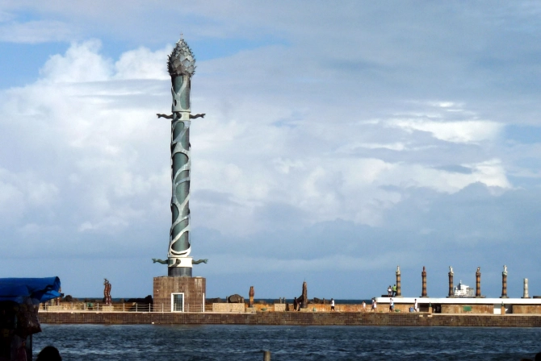

Pontos Turísticos:
Marco Zero
A Praça Barão do Rio Branco, mais conhecida como Marco Zero, é um dos lugares mais simbólicos de Recife
porque remete à fundação da cidade e aos tempos gloriosos da época colonial quando era um dos principais
centros econômicos do país.
|
Sobre o Marco Zero
O Marco Zero é o ponto zero de todas as medidas oficiais das distâncias rodoviárias de Pernambuco, assinalado por uma placa colocada no chão da Praça Barão do Rio Branco, no Bairro do Recife.
Esse símbolo, no entanto, é relativamente recente. Na década de 90, o bairro passou por um processo de revitalização que modificou o desenho original da praça, transformando-a em um amplo largo. O antigo piso foi substituído por um grande painel em forma de rosa dos ventos realizado por Cícero Dias, artista pernambucano, e inspirado na tela Eu vi o mundo… Ele começava no Recife, de 1930, do mesmo artista.
Também foi alterada a posição do Marco Zero, o obelisco colocado no centro praça em 1938, pelo Automóvel Clube de Pernambuco, foi deslocado em outro ponto da praça, juntamente como a estátua do Barão do Rio Branco.
|
|

|
Conjunto arquitetônico eclético
A praça e o bairro inteiro, já durante o domínio holandês (1630-1654), passaram por aterros e reformas radicais, com altos e baixos. Uma das mais importantes foi a reforma urbana do início de 1900, que deixou como legado um importante acervo arquitetônico eclético, tombado como patrimônio nacional pelo IPHAN em 1998, que assim justifica o reconhecimento:
Exemplar único, íntegro e híbrido da Paris de Haussmann no Brasil.
Nesse meio tempo o bairro passou por uma lenta deterioração e os antigos palacetes, símbolos da prosperidade recifense, foram aos poucos abandonados ou transformados em cabarés e até mesmo os boêmios renunciaram aos debates intelectuais nos botequins dos arredores.
A revitalização do bairro ressuscitou o casario da praça e muitos outros edifícios do bairro e hoje é possível aprecia-los e imaginar a beleza e a suntuosidade desse pedacinho da cidade
|
Parque das Esculturas de Francisco Brennand
Exatamente na frente do Marco Zero, do outro lado do estuário, fica o Parque das Esculturas, uma exposição de mais de 90 (?) obras do escultor e artista plástico pernambucano Francisco Brennand, inaugurado em 2000 para comemorar os 500 anos da chegada dos portugueses ao Brasil.
A obra mais famosa é a Torre de Cristal, com 32 metros de altura. Infelizmente fica difícil informar sobre as outras obras porque há anos o parque é alvo de roubos (sim, roubos) e atos de vandalismo. Algumas das obras mais interessantes foram estragadas ou roubadas, como a imensa Serpente de bronze de quase 20 metros de comprimento.
Para chegar lá você pode pegar o barquinho que sai do Marco Zero ou ir de carro, moto ou bicicleta passando pela Avenida Brasília Teimosa, seguindo até o dique. Aconselho a quem vai de carro de verificar as condições do trecho da avenida que fica no dique. No local tem um pequeno estacionamento.
|

|

|
Armazéns do Porto
Do lado direito da praça encontra-se Armazéns do Porto, um espaço de entretenimento e gastronomia,
com várias opções de bares e uma vista excelente onde recifenses e turistas jogam papo fora nos fins de tarde e à noite.
|
Central de Artesanato
Inaugurado em 2012, o Centro de Artesanato de Pernambuco tem como foco a arte popular e o artesanato tradicional.
Ele fica no antigo Armazém 11, além de poder adquirir várias peças de grandes artesãos e artistas reconhecidos de todo o estado,
há galeria para exposição, auditório e espaço gastronômico com uma vista para o rio Capibaribe.
|
|